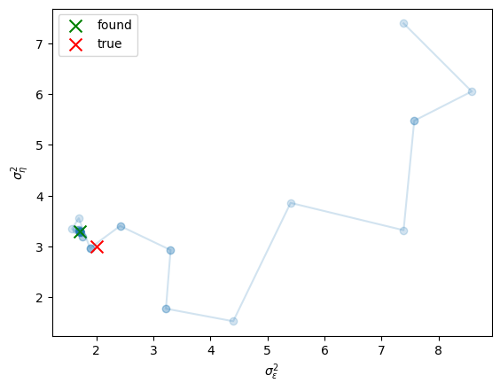
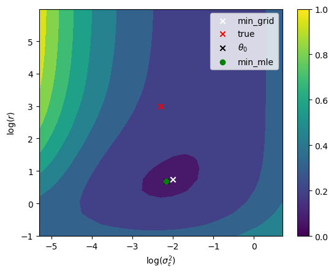

def parameterized_lcm(theta, aux):
log_s2_eps, log_s2_eta = theta
n, x0, s2_x0 = aux
return lcm(n, x0, s2_x0, jnp.exp(log_s2_eps), jnp.exp(log_s2_eta))
theta = jnp.log(jnp.array([2., 3.]))
aux = (100, 0., 1.)
x0, A, B, Sigma, Omega = parameterized_lcm(theta, aux)
_, (y,) = simulate_glssm(x0, A, B, Sigma, Omega, 1, jrn.PRNGKey(15435324))
# start far away from true parameter
result_nelder_mead = mle_glssm(y, parameterized_lcm, 2 * jnp.ones(2), aux, options={"return_all": True})
result_ad = mle_glssm_ad(y, parameterized_lcm, 2 * jnp.ones(2), aux)Maximum Likelihood estimation
Gaussian linear models
For Gaussian linear state space models we can evaluate the likelihood analytically with a single pass of the Kalman filter. Based on the predictions \(\hat Y_{t| t - 1}\) and associated covariance matrices \(\Psi_{t + 1 | t}\) for \(t = 0, \dots n\) produced by the Kalman filter we can derive the gaussian negative log likelihood which is given by the gaussian distribution with that mean and covariance matrix and observation \(Y_t\).
gnll
gnll (y:jaxtyping.Float[Array,'n+1p'], x_pred:jaxtyping.Float[Array,'n+1m'], Xi_pred:jaxtyping.Float[Array,'n+1mm'], B:jaxtyping.Float[Array,'n+1pm'], Omega:jaxtyping.Float[Array,'n+1pp'])
Gaussian negative log-likelihood
| Type | Details | |
|---|---|---|
| y | Float[Array, ‘n+1 p’] | observations \(y_t\) |
| x_pred | Float[Array, ‘n+1 m’] | predicted states \(\hat X_{t+1\bar t}\) |
| Xi_pred | Float[Array, ‘n+1 m m’] | predicted state covariances \(\Xi_{t+1\bar t}\) |
| B | Float[Array, ‘n+1 p m’] | state observation matrices \(B_{t}\) |
| Omega | Float[Array, ‘n+1 p p’] | observation covariances \(\Omega_{t}\) |
| Returns | Float | gaussian negative log-likelihood |
MLE in GLSSMs
For a parametrized GLSSM, that is a model that depends on parameters \(\theta\), we can use numerical optimization to find the maximum likelihood estimatior.
Caution
With these methods, the user has to take care that they provide a parametrization that is unconstrained, i.e. using \(\log\) transformations for positive parameters.
Implementation Detail
For low dimensional state space models obtaining the gradient of the negative log likelihood may be feasible by automatic differentiation, in this case use the mle_glssm_ad method. Otherwise the derivative free Nelder-Mead method in mle_glssm may be favorable.
mle_glssm_ad
mle_glssm_ad (y:jaxtyping.Float[Array,'n+1p'], model, theta0:jaxtyping.Float[Array,'k'], aux, options=None)
Maximum likelihood estimation for GLSSM using automatic differentiation
| Type | Default | Details | |
|---|---|---|---|
| y | Float[Array, ‘n+1 p’] | observations \(y_t\) | |
| model | parameterize GLSSM | ||
| theta0 | Float[Array, ‘k’] | initial parameter guess | |
| aux | auxiliary data for the model | ||
| options | NoneType | None | options for the optimizer |
| Returns | OptimizeResults | result of MLE optimization |
mle_glssm
mle_glssm (y:jaxtyping.Float[Array,'n+1p'], model, theta0:jaxtyping.Float[Array,'k'], aux, options=None)
Maximum likelihood estimation for GLSSM
| Type | Default | Details | |
|---|---|---|---|
| y | Float[Array, ‘n+1 p’] | observations \(y_t\) | |
| model | parameterize GLSSM | ||
| theta0 | Float[Array, ‘k’] | initial parameter guess | |
| aux | auxiliary data for the model | ||
| options | NoneType | None | options for the optimizer |
| Returns | OptimizeResult | result of MLE optimization |
import matplotlib.pyplot as plttheta_nm = jnp.array(result_nelder_mead.allvecs)
plt.plot(jnp.exp(theta_nm[:,0]), jnp.exp(theta_nm[:,1]), alpha=.2)
plt.scatter(jnp.exp(theta_nm[:,0]), jnp.exp(theta_nm[:,1]), alpha=.2)
plt.scatter(*jnp.exp(result_ad.x), c="g", marker="x", label="found", s=100)
plt.scatter(*jnp.exp(theta), c="r", s=100, marker="x", label="true")
plt.legend()
plt.xlabel("$\\sigma^2_\\varepsilon$")
plt.ylabel("$\\sigma^2_\\eta$")
plt.show()
Asymptotic behavior of MLE
TODO
Write / Implement
Inference for Log-Concave State Space Models
For non-gaussian state space models we cannot evaluate the likelihood analytically but resort to simulation methods, more specifically importance sampling.
Importance Sampling is performed using a surrogate gaussian model that shares the state density \(g(x) = p(x)\) and is parameterized by synthetic observations \(z\) and their covariance matrices \(\Omega\). In this surrogate model the likeilhood \(\ell_g = g(z)\) and posterior distribution \(g(x|z)\) are tractable and we can simulate from the posterior.
Having obtained \(N\) independent samples \(X^i, i= 1, \dots, N\) from this surrogate posterior we can evaluate the likelihood \(\ell\) by Monte-Carlo integration:
\[ \begin{align*} p(y) &= \int p(x, y) \,\mathrm dx \\ &=\int \frac{p(x,y)}{g(x|z)} g(x|z) \,\mathrm dx \\ &= g(z) \int \frac{p(y|x)}{g(z|x)} g(x|z)\,\mathrm dx \\ &\approx g(z) \frac 1 N \sum_{i =1}^N w(X^i) \end{align*} \]
where \(w(X^i) = \frac{p\left(y|X^i\right)}{g\left(z|X^i\right)}\) are the unnormalized importance sampling weights.
In total we can approximate the negative log-likelihood by
\[ \ell = - \log p(y) \approx \ell_g - \log \left(\sum_{i=1}^N w(X^i) \right) + \log N. \]
TODO
Use differentiation only weights for gradient
lcnll
lcnll (y:jaxtyping.Float[Array,'n+1p'], x0:jaxtyping.Float[Array,'m'], A:jaxtyping.Float[Array,'nmm'], Sigma:jaxtyping.Float[Array,'n+1mm'], B:jaxtyping.Float[Array,'n+1pm'], xi:jaxtyping.Float[Array,'n+1p'], dist, z:jaxtyping.Float[Array,'n+1p'], Omega:jaxtyping.Float[Array,'n+1pp'], N:int, key:Union[jaxtyping.Key[Array,''],jaxtyping.UInt32[Array,'2']])
Log-Concave Negative Log-Likelihood
| Type | Details | |
|---|---|---|
| y | Float[Array, ‘n+1 p’] | observations |
| x0 | Float[Array, ‘m’] | initial state |
| A | Float[Array, ‘n m m’] | state transition matrices |
| Sigma | Float[Array, ‘n+1 m m’] | innovation covariance matrices |
| B | Float[Array, ‘n+1 p m’] | observation matrices |
| xi | Float[Array, ‘n+1 p’] | observation parameters |
| dist | distribution of observations | |
| z | Float[Array, ‘n+1 p’] | synthetic observations |
| Omega | Float[Array, ‘n+1 p p’] | covariance of synthetic observations |
| N | int | number of samples |
| key | Union | random key |
| Returns | Float | the approximate negative log-likelihood |
To perform maximum likelihood estimation in a parameterized log-concave state space model we have to evaluate the likelihood several times. For evaluating the likelihood at \(\theta\) we have to perform the following:
- Find a surrogate gaussian model \(g(x,z)\) for \(p_\theta(x,y)\) (e.g. mode estimation or efficient importance sampling).
- Generate importance samples from these models using the Kalman smoother.
- Approximate the negative log likelihood using the methods of this module.
This makes maximum likelihood an intensive task for these kinds of models.
For an initial guess we optimize the approximatie loglikelihood with the weights component fixed at the mode, see Eq. (21) in(Duribn1997Monte?) for further details.
initial_theta
initial_theta (y:jaxtyping.Float[Array,'n+1p'], model, theta0:jaxtyping.Float[Array,'k'], aux, n_iter_me:int, s_init:jaxtyping.Float[Array,'n+1m'], options=None)
Initial value for Maximum Likelihood Estimation for Log Concave SSMs
| Type | Default | Details | |
|---|---|---|---|
| y | Float[Array, ‘n+1 p’] | observations \(y_t\) | |
| model | parameterized LCSSM | ||
| theta0 | Float[Array, ‘k’] | initial parameter guess | |
| aux | auxiliary data for the model | ||
| n_iter_me | int | number of mode estimation iterations | |
| s_init | Float[Array, ‘n+1 m’] | initial signals for mode estimation | |
| options | NoneType | None | options for the optimizer |
mle_lcssm
mle_lcssm (y:jaxtyping.Float[Array,'n+1p'], model, theta0:jaxtyping.Float[Array,'k'], aux, n_iter_me:int, s_init:jaxtyping.Float[Array,'n+1m'], N:int, key:jax.Array, options=None)
Maximum Likelihood Estimation for Log Concave SSMs
| Type | Default | Details | |
|---|---|---|---|
| y | Float[Array, ‘n+1 p’] | observations \(y_t\) | |
| model | parameterized LCSSM | ||
| theta0 | Float[Array, ‘k’] | initial parameter guess | |
| aux | auxiliary data for the model | ||
| n_iter_me | int | number of mode estimation iterations | |
| s_init | Float[Array, ‘n+1 m’] | initial signals for mode estimation | |
| N | int | number of importance samples | |
| key | Array | random key | |
| options | NoneType | None | options for the optimizer |
| Returns | Float[Array, ‘k’] | MLE |
As an example consider a parameterized version of the common factor negative binomial model with unknown parameters \(\sigma^2_\varepsilon\) and \(r\).
def lc_model(theta, aux):
log_s2_eps, log_r = theta
n, x0 = aux
r = jnp.exp(log_r)
s2_eps = jnp.exp(log_s2_eps)
A = jnp.broadcast_to(jnp.eye(3), (n, 3, 3))
Sigma = jnp.broadcast_to(jnp.eye(3) * s2_eps, (n+1, 3, 3))
B = jnp.broadcast_to(jnp.array([[1., 1., 0.], [0., 1., 1.]]), (n+1, 2, 3))
return nb_lcssm(x0, A, Sigma, B, r)
n = 10
theta_lc = jnp.array([jnp.log(0.1), jnp.log(20.)])
aux = (n, jnp.ones(3))
x0, A, Sigma, B, dist, xi = lc_model(theta_lc, aux)
key = jrn.PRNGKey(512)
key, subkey = jrn.split(key)
_, (y,) = simulate_lcssm(x0, A, Sigma, B, dist, xi, 1, subkey)initial_result = initial_theta(
y, lc_model, theta_lc, aux, 10, jnp.log(y + 1)
)
theta0 = initial_result.x
theta0array([-2.16919616, 0.68065415])@jit
def lcnll_full(theta):
x0, A, Sigma, B, xi_fun, dist = lc_model(theta, aux)
_, z, Omega = mode_estimation(y, x0, A, Sigma, B, xi_fun, dist, jnp.log(y + 1.), 10)
return lcnll(y, x0, A, Sigma, B, xi_fun, dist, z, Omega, 1000, subkey)# 2d grid on the log scale
log_sigma, log_r = jnp.meshgrid(jnp.linspace(-3, 3, 21) + theta_lc[0], jnp.linspace(-4, 3, 21) + theta_lc[1])
#flatten
thetas = jnp.vstack([log_sigma.ravel(), log_r.ravel()]).T
nlls = vmap(lcnll_full)(thetas)
#location of minium in nlls
i = jnp.argmin(nlls)
#location of minimum in the grid
i_sigma, i_r = i // 21, i % 21
plt.contourf(log_sigma, log_r, nlls.reshape(21, 21))
plt.scatter(log_sigma[i_sigma, i_r], log_r[i_sigma, i_r], c="white", marker="x", label="min_grid")
plt.scatter(theta_lc[0], theta_lc[1], c="r", marker="x", label="true")
plt.scatter(theta0[0], theta0[1], c="black", marker="x", label="$\\theta_0$")
plt.scatter(*result.x, c="g", marker="o", label="min_mle")
plt.legend()
plt.xlabel("$\\log(\\sigma^2_\\varepsilon)$")
plt.ylabel("$\\log(r)$")
plt.colorbar()
plt.show()
theta0array([-2.16919616, 0.68065415])